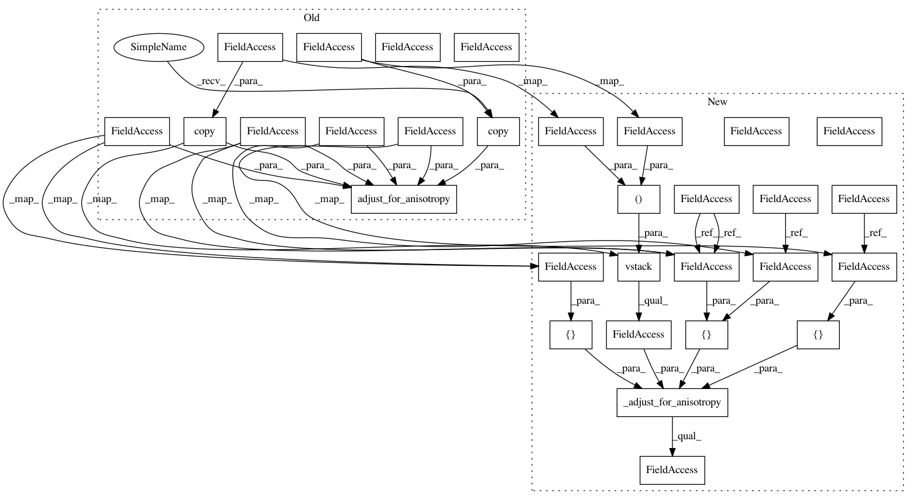

9b1af381e74ae4e967c0a3878353b3256f0aadab,pykrige/ok.py,OrdinaryKriging,__init__,#OrdinaryKriging#Any#Any#Any#Any#Any#Any#Any#Any#Any#Any#Any#Any#Any#Any#,198
Before Change
if self.verbose:
print("Adjusting data for anisotropy...")
self.X_ADJUSTED, self.Y_ADJUSTED = \
core.adjust_for_anisotropy(np.copy(self.X_ORIG), np.copy(self.Y_ORIG),
self.XCENTER, self.YCENTER,
self.anisotropy_scaling, self.anisotropy_angle)
elif coordinates_type == "geographic":
// Leave everything as is in geographic case.
// May be open to discussion?
After Change
print("Plotting Enabled\n")
if coordinates_type == "euclidean":
self.XCENTER = (np.amax(self.X_ORIG) + np.amin(self.X_ORIG))/2.0
self.YCENTER = (np.amax(self.Y_ORIG) + np.amin(self.Y_ORIG))/2.0
self.anisotropy_scaling = anisotropy_scaling
self.anisotropy_angle = anisotropy_angle
if self.verbose:
print("Adjusting data for anisotropy...")
self.X_ADJUSTED, self.Y_ADJUSTED = \
_adjust_for_anisotropy(np.vstack((self.X_ORIG, self.Y_ORIG)).T,
[self.XCENTER, self.YCENTER],
[self.anisotropy_scaling],
[self.anisotropy_angle]).T
elif coordinates_type == "geographic":
// Leave everything as is in geographic case.
// May be open to discussion?
In pattern: SUPERPATTERN
Frequency: 3
Non-data size: 30
Instances
Project Name: bsmurphy/PyKrige
Commit Name: 9b1af381e74ae4e967c0a3878353b3256f0aadab
Time: 2017-01-27
Author: rth.yurchak@gmail.com
File Name: pykrige/ok.py
Class Name: OrdinaryKriging
Method Name: __init__
Project Name: bsmurphy/PyKrige
Commit Name: 9b1af381e74ae4e967c0a3878353b3256f0aadab
Time: 2017-01-27
Author: rth.yurchak@gmail.com
File Name: pykrige/uk.py
Class Name: UniversalKriging
Method Name: update_variogram_model
Project Name: bsmurphy/PyKrige
Commit Name: 9b1af381e74ae4e967c0a3878353b3256f0aadab
Time: 2017-01-27
Author: rth.yurchak@gmail.com
File Name: pykrige/ok.py
Class Name: OrdinaryKriging
Method Name: __init__
Project Name: bsmurphy/PyKrige
Commit Name: 9b1af381e74ae4e967c0a3878353b3256f0aadab
Time: 2017-01-27
Author: rth.yurchak@gmail.com
File Name: pykrige/ok.py
Class Name: OrdinaryKriging
Method Name: update_variogram_model